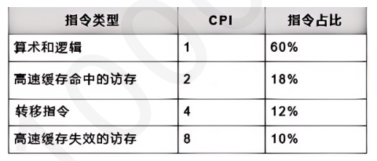

第 31 题
假设同一套指令集用不同的方法设计了两种机器M1 和M2。机器M1 的时钟周期为0.8ns，机器M2 的时钟周期为1.2ns。某个程序P 在机器M1 上运行时的CPI 为4，在M2 上的CPI 为2。对于程序P 来说，哪台机器的执行速度更快？快多少？（ ）
- A．M1 比M2 快，快25%
- B．M2 比M1 快，快33%
- C．M1 比M2 快，快33%
- D．M2 比M1 快，快25%
答案与解析
答案：D
假设程序P的指令条数为N，则在M1和M2上的执行时间分别为M1: 4 Nx0.8 = 3.2N (ns) M2: 2 N×1.2 =2.4N( ns) 所以，M2执行P的速度更快，每条指令平均快0.8ns，比M1快0.8/3.2×100%=25%，D正确。
第 32 题
用一台主频为40MHz 的处理器执行标准测试程序，测试程序的指令条数（l）一共5000 条它所包含的混合指令数和响应所需的时钟周期如下表给出。这个处理器的MIPS 数和程序的执行时间分别为（）。

- A．2.24,2.8 × 10−4秒
- B．2.24,112 × 10−4秒
- C．17.9,2.8 × 10−4秒
- D．89.6,112 × 10−4秒
答案与解析
答案：C
𝐶𝑃𝐼= 1 × 60% + 2 × 18% + 4 × 12% + 8 × 10% =2.24MIPS=40/𝐶𝑃𝐼= 40/2.24 = 17.91140×106 × 5000 =2.8 × 10−4秒，C正确。 T =𝐶𝑃𝐼× 𝑓× 𝐼= 2.24 ×
第 33 题
关于机器字长、存储字长、指令字长三者的关系，说法正确的是（ ） I．机器字长等于存储字长II．机器字长通常等于整数倍的存储字长III．指令字长通常等于整数倍的存储字长IV．指令字长等于存储字长
- A．I、IV
- B．仅IV
- C．II、IV
- D．II、III
答案与解析
答案：D
机器字长是计算机进行一次整数运算能够处理的二进制数据的位数。存储字长是一个存储单元中的二进制代码位数。指令字长是一个指令字中包含的二进制代码的位数。机器字长和存储字长没有必然的联系，但为了方便读取数据，通常规定机器字长等于整数倍的存储字长。故I错，II对。指令字长与存储字长间也没有必然联系，但为了方便取指，通常规定指令字长等于整数倍的存储字长，故III对，D正确。
第 34 题
一台计算机的字长为4 个字节，则表明该机器（ ）。
- A．能处理的数据最大为4 位十进制数
- B．能处理的数据最多为4 位二进制数
- C．在CPU 中能够作为一个整体加以处理的二进制代码为32 位
- D．在CPU 中运算的结果最大2 的32 次方
答案与解析
答案：C
此处的字长为机器字长，即计算机进行一次整数运算所能处理的二进制数据的位数。一台计算机的字长为4字节，这表示该CPU进行一次整数运算（ALU）能够处理的二进制数据的位数是32位，C正确。运算结果最大不一定为232，比如无符号数，最大为232−1
第 35 题
下列关于计算机的单位时间关系，正确的是（ ）。 I．时钟周期II．机器周期III．指令周期
- A．𝐼≥𝐼𝐼≥𝐼𝐼𝐼
- B．𝐼𝐼𝐼≥𝐼𝐼≥𝐼
- C．𝐼𝐼≥𝐼𝐼𝐼≥𝐼
- D．𝐼𝐼≥𝐼≥𝐼𝐼𝐼
答案与解析
答案：B
时钟周期也称为震荡周期，定义为时钟频率的倒数，它是最基本的、最小的时间单位。在一个时钟周期内，CPU仅完成一个最基本的动作。机器周期也称CPU周期，在计算机中，为了便于管理，常把一条指令的执行过程划分为若干个阶段（如取指、译码、执行等），每一阶段完成一个基本操作。完成一个基本操作所需要的时间称为机器周期。一般情况下，一个机器周期由一个或若干个时钟周期组成。指令周期是取出一条指令并执行的时间，是从取指令、分析指令到执行完指令所需的全部时间，一般由一个或若干个机器周期组成。故这三者的大小关系应当是指令周期≥机器周期≥时钟周期，B正确。 【答案速对】 ADBDCBDBAAABCCCBDBCDCCAAACACCBDCCCABDBABDBCCCACCBBBCCABACCDDACCCAADDCCBBCAACDCCABBCBCBCDB